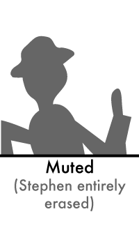

Stately, plump Buck Mulligan came from the stairhead, bearing a bowl of lather on which a mirror and a razor lay crossed. A yellow dressinggown, ungirdled, was sustained gently behind him on the mild morning air. He held the bowl aloft and intoned:
—Introibo ad altare Dei.
Halted, he peered down the dark winding stairs; solemnly he came forward and mounted the round gunrest. He faced about and blessed gravely thrice the tower, the surrounding land and the awaking mountains. He made rapid crosses in the air, gurgling in his throat and shaking his head. The shaking gurgling face, equine in its length, the light untonsured hair, grained and hued like pale oak.
Buck Mulligan peeped an instant under the mirror and then covered the bowl smartly.
—Back to barracks! he said sternly.
He added in a preacher's tone:
—For this, O dearly beloved, is the genuine Christine: body and soul and blood and ouns. Slow music, please. Shut your eyes, gents. One moment. A little trouble about those white corpuscles. Silence, all.
He peered sideways up and gave a long slow whistle of call, then paused awhile in rapt attention, his even white teeth glistening here and there with gold points. Two strong shrill whistles answered through the calm.
—Thanks, old chap, he cried briskly. That will do nicely. Switch off the current, will you?
He skipped off the gunrest, gathering about his legs the loose folds of his gown. The plump shadowed face and sullen oval jowl recalled a prelate, patron of arts in the middle ages. A pleasant smile broke quietly over his lips.
—The mockery of it! he said gaily.
He went over to the parapet, laughing to himself. He propped his mirror on the parapet, dipped the brush in the bowl and lathered cheeks and neck. His gay voice went on.
—My name is absurd: Malachi Mulligan, two dactyls. But it has a Hellenic ring, hasn't it? Tripping and sunny like the buck himself. He laid the brush aside, laughing with delight. Ceasing, he began to shave with care.
—God, isn't he dreadful? he said frankly. A ponderous Saxon. God, these bloody English! Bursting with money and indigestion. Because he comes from Oxford.
He shaved warily over his chin.
—A woful lunatic! Mulligan said. He frowned at the lather on his razorblade. He hopped down from his perch and began to search his trouser pockets hastily.
—Scutter! he cried thickly.
He came over to the gunrest and wiped the razorblade neatly. He mounted to the parapet again and gazed out over Dublin bay, his fair oakpale hair stirring slightly.
—God! he said quietly. Isn't the sea what Algy calls it: a grey sweet mother? The snotgreen sea. The scrotumtightening sea. Epi oinopa ponton. Ah, the Greeks! You must read them in the original. Thalatta! Thalatta! She is our great sweet mother. Our mighty mother!
He turned abruptly his grey searching eyes from the sea. He broke off and lathered again lightly his farther cheek. A tolerant smile curled his lips. He shaved evenly and with care, in silence, seriously. The ring of bay and skyline held a dull green mass of liquid.
Buck Mulligan wiped again his razorblade. He attacked the hollow beneath his underlip. He folded his razor neatly and with stroking palps of fingers felt the smooth skin. He swept the mirror a half circle in the air to flash the sunlight now radiant on the sea. His curling shaven lips laughed and the edges of his white glittering teeth. Laughter seized all his strong wellknit trunk. Laughing again, he brought the mirror away.
Buck Mulligan suddenly walked round the tower, his razor and mirror clacking in the pocket where he had thrust them.
—Cracked lookingglass of a servant! Tell that to the oxy chap downstairs and touch him for a guinea. He's stinking with money and thinks you're not a gentleman. His old fellow made his tin by selling jalap to Zulus or some bloody swindle or other. God, I might do something for the island. Hellenise it. And to think of your having to beg from these swine. Is it Haines? If he makes any noise here I'll bring down Seymour and we'll give him a ragging worse than they gave Clive Kempthorpe.
He halted, looking towards the blunt cape of Bray Head that lay on the water like the snout of a sleeping whale. A light wind passed his brow, fanning softly his fair uncombed hair and stirring silver points of anxiety in his eyes. Buck Mulligan frowned quickly and said:
—I can't remember anything. I remember only ideas and sensations. Why? What happened in the name of God? What did I say? I forget.
A flush which made him seem younger and more engaging rose to Buck Mulligan's cheek.
—Did I say that? he asked. Well? What harm is that?
He shook his constraint from him nervously.
—And what is death? I see them pop off every day in the Mater and Richmond and cut up into tripes in the dissectingroom. It's a beastly thing and nothing else. It simply doesn't matter. To me it's all a mockery and beastly. Her cerebral lobes are not functioning. She calls the doctor sir Peter Teazle and picks buttercups off the quilt. Humour her till it's over. Absurd!
He had spoken himself into boldness. He swung round on his heel.
—O, an impossible person! he exclaimed.
He walked off quickly round the parapet. A voice within the tower called loudly:
—Are you up there, Mulligan?
—I'm coming, Buck Mulligan answered. The Sassenach wants his morning rashers.
His head halted again for a moment at the top of the staircase, level with the roof:
—I'm inconsequent. Give up the moody brooding.
His head vanished but the drone of his descending voice boomed out of the stairhead:
And no more turn aside and brood
Upon love's bitter mystery
For Fergus rules the brazen cars.
A cloud began to cover the sun slowly, wholly, shadowing the bay in deeper green. Buck Mulligan's voice sang from within the tower. It came nearer up the staircase, singing out of tune with a Cockney accent:
O, won't we have a merry time,
Drinking whisky, beer and wine!
On coronation,
Coronation day!
O, won't we have a merry time
On coronation day!
The nickel shavingbowl shone, forgotten, on the parapet.
In the gloomy domed livingroom of the tower Buck Mulligan's gowned form moved briskly to and fro about the hearth, hiding and revealing its yellow glow. Two shafts of soft daylight fell across the flagged floor from the high barbacans: and at the meeting of their rays a cloud of coalsmoke and fumes of fried grease floated, turning.
—We'll be choked, Buck Mulligan said. Haines, open that door, will you?
A tall figure rose from the hammock where it had been sitting, went to the doorway and pulled open the inner doors.
—Have you the key? a voice asked.
—Janey Mack, I'm choked! he howled, without looking up from the fire:
The key scraped round harshly twice and, when the heavy door had been set ajar, welcome light and bright air entered. Haines stood at the doorway, looking out. Buck Mulligan tossed the fry on to the dish beside him. Then he carried the dish and a large teapot over to the table, set them down heavily and sighed with relief.
—I'm melting, he said, as the candle remarked when... But, hush! Not a word more on that subject! Bread, butter, honey. Haines, come in. The grub is ready. Bless us, O Lord, and these thy gifts. Where's the sugar? O, jay, there's no milk.
Buck Mulligan sat down in a sudden pet.
—What sort of a kip is this? he said. I told her to come after eight. I want Sandycove milk.
Haines came in from the doorway and said quietly:
—That woman is coming up with the milk.
—The blessings of God on you! Buck Mulligan cried, jumping up from his chair. Sit down. Pour out the tea there. The sugar is in the bag. Here, I can't go fumbling at the damned eggs.
He hacked through the fry on the dish and slapped it out on plates, saying:
—In nomine Patris et Filii et Spiritus Sancti.
Haines sat down to pour out the tea.
—I'm giving two lumps each, he said. But, I say, Mulligan, you do make strong tea, don't you?
Buck Mulligan, hewing thick slices from the loaf, said in an old woman's wheedling voice:
—When I makes tea I makes tea, as old mother Grogan said. And when I makes water I makes water.
—By Jove, it is tea, Haines said.
Buck Mulligan went on hewing and wheedling:
—So I do, Mrs Cahill, says she. Begob, ma'am, says Mrs Cahill, God send you don't make them in the one pot.
He lunged towards his messmate a thick slice of bread, impaled on his knife.
—That's folk, he said very earnestly, for your book, Haines. Five lines of text and ten pages of notes about the folk and the fishgods of Dundrum. Printed by the weird sisters in the year of the big wind.
He asked in a fine puzzled voice, lifting his brows:
—Can you recall, is mother Grogan's tea and water pot spoken of in the Mabinogion or is it in the Upanishads?
Buck Mulligan's face smiled with delight. Then, suddenly overclouding all his features, he growled in a hoarsened rasping voice as he hewed again vigorously at the loaf:
—For old Mary Ann
She doesn't care a damn.
But, hising up her petticoats...
He crammed his mouth with fry and munched and droned. The doorway was darkened by an entering form.
—The milk, sir!
—Come in, ma'am, Mulligan said.
An old woman came forward.
—That's a lovely morning, sir, she said. Glory be to God.
—To whom? Mulligan said, glancing at her. Ah, to be sure! The islanders, Mulligan said to Haines casually, speak frequently of the collector of prepuces.
—How much, sir? asked the old woman.
He watched her pour into the measure and thence into the jug rich white milk.
—It is indeed, ma'am, Buck Mulligan said, pouring milk into their cups.
—Taste it, sir, she said.
He drank at her bidding.
—If we could live on good food like that, he said to her somewhat loudly, we wouldn't have the country full of rotten teeth and rotten guts. Living in a bogswamp, eating cheap food and the streets paved with dust, horsedung and consumptives' spits.
—Are you a medical student, sir? the old woman asked.
—I am, ma'am, Buck Mulligan answered.
—Look at that now. Is it French you are talking, sir? the old woman said to Haines.
Haines spoke to her again a longer speech, confidently.
—Irish, Buck Mulligan said. Is there Gaelic on you?
—I thought it was Irish, she said, by the sound of it. Are you from the west, sir?
—I am an Englishman, Haines answered.
—He's English, Buck Mulligan said, and he thinks we ought to speak Irish in Ireland.
—Sure we ought to, the old woman said, and I'm ashamed I don't speak the language myself. I'm told it's a grand language by them that knows.
—Grand is no name for it, said Buck Mulligan. Wonderful entirely. Would you like a cup, ma'am?
—No, thank you, sir, the old woman said, slipping the ring of the milkcan on her forearm and about to go.
Haines said to her:
—Have you your bill? We had better pay her, Mulligan, hadn't we?
—Bill, sir? she said, halting. Well, it's seven mornings a pint at twopence is seven twos is a shilling and twopence over and these three mornings a quart at fourpence is three quarts is a shilling. That's a shilling and one and two is two and two, sir.
Buck Mulligan sighed and, having filled his mouth with a crust thickly buttered on both sides, stretched forth his legs and began to search his trouser pockets.
—Pay up and look pleasant, Haines said to him, smiling.
Buck Mulligan brought up a florin, twisted it round in his fingers and cried:
—A miracle!
He passed it along the table towards the old woman, saying:
—Ask nothing more of me, sweet. All I can give you I give. We'll owe twopence.
—Time enough, sir, she said, taking the coin. Time enough. Good morning, sir.
She curtseyed and went out, followed by Buck Mulligan's tender chant:
—Heart of my heart, were it more,
More would be laid at your feet.
He turned and said:
—Seriously, I'm stony. Today the bards must drink and junket. Ireland expects that every man this day will do his duty.
—That reminds me, Haines said, rising, that I have to visit your national library today.
—Our swim first, Buck Mulligan said.
Haines from the corner where he was knotting easily a scarf about the loose collar of his tennis shirt laughed and, as he took his soft grey hat from the holdfast of the hammock, said:
—I don't know, I'm sure.
He strolled out to the doorway. Buck Mulligan sighed tragically. He stood up, gravely ungirdled and disrobed himself of his gown, saying resignedly:
—Mulligan is stripped of his garments.
He emptied his pockets on to the table, and putting on his stiff collar and rebellious tie he spoke to them, chiding them, and to his dangling watchchain. His hands plunged and rummaged in his trunk while he called for a clean handkerchief. Haines called from the doorway:
—Are you coming, you?
—I'm ready, Buck Mulligan answered, going towards the door. Resigned he passed out with grave words and gait, saying, wellnigh with sorrow:
—And going forth he met Butterly.
He clubbed with his heavy bathtowel the leader shoots of ferns or grasses.
—Down, sir! How dare you, sir!
Haines asked:
—Do you pay rent for this tower?
—Twelve quid, Buck Mulligan said.
They halted while Haines surveyed the tower and said at last:
—Rather bleak in wintertime, I should say. Martello you call it?
—Billy Pitt had them built, Buck Mulligan said, when the French were on the sea. But ours is the omphalos. Wait till I have a few pints in me first.
He turned as he pulled down neatly the peaks of his primrose waistcoat.
—You pique my curiosity, Haines said amiably. Is it some paradox?
—Pooh! Buck Mulligan said. We have grown out of Wilde and paradoxes. It's quite simple.
—What? Haines said.
Buck Mulligan slung his towel stolewise round his neck, bending in loose laughter. Buck Mulligan, walking forward again, raised his hands.
—The sacred pint alone can unbind the tongue, he said.
—I mean to say, Haines explained, this tower and these cliffs here remind me somehow of Elsinore. That beetles o'er his base into the sea, isn't it?
Buck Mulligan turned suddenly for an instant but did not speak.
—It's a wonderful tale, Haines said, bringing them to halt again. I read a theological interpretation of it somewhere, he said bemused. The Father and the Son idea. The Son striving to be atoned with the Father.
Buck Mulligan at once put on a blithe broadly smiling face. He looked at him, his wellshaped mouth open happily, his eyes, from which he had suddenly withdrawn all shrewd sense, blinking with mad gaiety. He moved a doll's head to and fro, the brims of his Panama hat quivering, and began to chant in a quiet happy foolish voice:
—I'm the queerest young fellow that ever you heard.
My mother's a jew, my father's a bird.
With Joseph the joiner I cannot agree.
So here's to disciples and Calvary.
He held up a forefinger of warning.
—If anyone thinks that I amn't divine
He'll get no free drinks when I'm making the wine
But have to drink water and wish it were plain
That I make when the wine becomes water again.
Running forward to a brow of the cliff, he fluttered his hands at his sides like fins or wings of one about to rise in the air, and chanted:
—Goodbye, now, goodbye! Write down all I said
And tell Tom, Dick and Harry I rose from the dead.
What's bred in the bone cannot fail me to fly
And Olivet's breezy... Goodbye, now, goodbye!
He capered down towards the fortyfoot hole, fluttering his winglike hands, leaping nimbly, Mercury's hat quivering in the fresh wind that bore back his brief birdsweet cries. Haines, who had been laughing guardedly, walked on:
—Oughtn't to laugh, I suppose. He's rather blasphemous. I'm not a believer myself, that is to say. Still his gaiety takes the harm out of it somehow, doesn't it? What did he call it? Joseph the Joiner?
Haines stopped to take out a smooth silver case in which twinkled a green stone. He sprang it open with his thumb, helped himself and snapped the case to. He put it back in his sidepocket and took from his waistcoatpocket a nickel tinderbox, sprang it open too, and lit his cigarette.
—Either you believe or you don't, isn't it? Personally I couldn't stomach that idea of a personal God.
He walked on and detached from his underlip some fibres of tobacco before he spoke.
—An Irishman must think like that, I daresay. It seems history is to blame. Of course I'm a Britisher, and I feel as one. I don't want to see my country fall into the hands of German jews either. That's our national problem, I'm afraid, just now.
Two men stood at the verge of the cliff, watching: businessman, boatman.
—She's making for Bullock harbour.
The boatman nodded towards the north of the bay with some disdain.
—There's five fathoms out there, he said. It'll be swept up that way when the tide comes in about one. It's nine days today.
Buck Mulligan stood on a stone, in shirtsleeves, his unclipped tie rippling over his shoulder. A young man clinging to a spur of rock near him, moved slowly frogwise his green legs in the deep jelly of the water.
—Is the brother with you, Malachi?
—Down in Westmeath. With the Bannons.
—Still there? I got a card from Bannon. Says he found a sweet young thing down there. Photo girl he calls her.
—Snapshot, eh? Brief exposure.
Buck Mulligan sat down to unlace his boots. An elderly man shot up near the spur of rock a blowing red face. He scrambled up by the stones, water glistening on his pate and on its garland of grey hair, water rilling over his chest and paunch and spilling jets out of his black sagging loincloth. Buck Mulligan made way for him to scramble past and, glancing at Haines, crossed himself piously with his thumbnail at brow and lips and breastbone.
—Seymour's back in town, the young man said, grasping again his spur of rock. Chucked medicine and going in for the army.
—Ah, go to God! Buck Mulligan said.
—Going over next week to stew. You know that red Carlisle girl, Lily?
—Yes.
—Spooning with him last night on the pier. The father is rotto with money.
—Is she up the pole?
—Better ask Seymour that.
—Seymour a bleeding officer! Buck Mulligan said.
He nodded to himself as he drew off his trousers and stood up, saying tritely:
—Redheaded women buck like goats.
He broke off in alarm, feeling his side under his flapping shirt.
—My twelfth rib is gone, he cried. I'm the Uebermensch.
He struggled out of his shirt and flung it behind him to where his clothes lay.
—Are you going in here, Malachi?
—Yes. Make room in the bed.
The young man shoved himself backward through the water and reached the middle of the creek in two long clean strokes. Haines sat down on a stone, smoking.
—Are you not coming in? Buck Mulligan asked.
—Later on, Haines said. Not on my breakfast.
Buck Mulligan erect, with joined hands before him, said solemnly:
—He who stealeth from the poor lendeth to the Lord. Thus spake Zarathustra.
His plump body plunged.